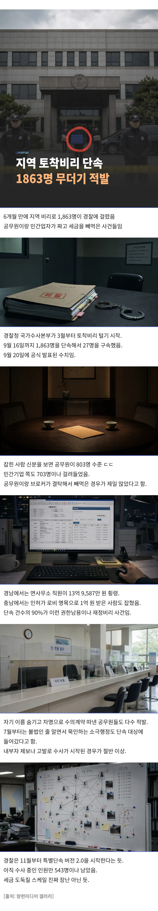

https://www.korea.kr/briefing/pressReleaseView.do?newsId=156782601&pageIndex=1&repCodeType=&repCode=&startDate=2025-09-21&endDate=2026-09-21&srchWord=%ED%86%A0%EC%B0%A9&period=year
지방은 뭔가 다르긴 함..

https://www.korea.kr/briefing/pressReleaseView.do?newsId=156782601&pageIndex=1&repCodeType=&repCode=&startDate=2025-09-21&endDate=2026-09-21&srchWord=%ED%86%A0%EC%B0%A9&period=year
지방은 뭔가 다르긴 함..
거긴 규모가 좀 더 크지
수도권은 동네 유지가 아니라 나라 유지끼리 붙어먹음 ㅋㅋㅋㅋㅋ
거긴 건드릴수가 읍서...ㅋㅋ
거기는 없다고 친답니다~
일단 지방혐오부터 하자
아무래도 수도권은 금액이 크니까 말단 보다 대가리들이 직접
잘하자?
거기는 거물급 + 고위관료라 걸리면 뉴스 속보로 나옴
지역 토착이니 수도권 포함임
짤은 ai짤같고 기사글도 없고 뭐임?
https://www.khan.co.kr/article/202609201221001
기사 바로 뜨는데??
링크 가보면, 경찰청 보도 자료 있음. 기사보다 훨씬 양질의 소스고.
요즘 더쿠 보면 언론쪽에서 몇줄만 넘어도 저작권으로 조지는듯? 차라리 저게 나음.
뭐여 링크 언제 달았냐 아까는 링크도 없고 저거 한짤이 끝이였는데
https://news.sbs.co.kr/news/endPage.do?news_id=N1008761985&plink=ORI&cooper=NAVER#close - sbs
경남에서는 면장과 부면장이 자리를 비운 사이 행정정보시스템에 몰래 접속해 지출결의를 처리하는 수법으로 13억 9천여만 원을 횡령한 혐의를 받는 면사무소 예산 담당 공무원이 구속됐습니다.
강원에서는 담당 업무와 관련된 환경업체를 차명으로 운영하면서 이를 지방자치단체에 숨긴 채 5천 500만 원 상당의 해충기피제 납품 수의계약을 체결한 혐의를 받는 공무원 등 3명이 검거됐습니다.
https://news.kbs.co.kr/news/pc/view/view.do?ncd=8667931&ref=A - kbs
경찰청 국가수사본부는 지난 3월부터 이번 달 16일까지 집계된 토착비리 특별 단속 결과를 오늘(20일) 발표했습니다.
경찰은 그동안 지자체 공무원들이 부당계약과 재정비리, 권한남용, 내부정보 이용을 비롯해 불법행위를 알고도 방치하거나 묵인하는 불법방임 범죄 등을 집중적으로 단속했습니다.
대표적으로 경남경찰청 반부패수사대는 면장이나 부면장이 자리를 비운 사이 행정정보시스템에 몰래 접속해 지출결의서를 결재하는 수법으로 169차례에 걸쳐 13억 9천여만 원을 횡령한 군청 소속 공무원 1명을 검거해 구속했습니다.
또 충남경찰청 반부패수사대는 폐기물업체를 상대로 시장과 공무원과의 친분을 과시하며 인허가를 받을 수 있도록 해주겠다며 1억 원을 받은 전직 시장 선거대책위원회 관계자 1명을 검거해 구속했습니다.
굵직한 언론에서 내놓는 중 네이버나 구글에 지역유착비리 검색 고고링
지역 토착비리 100% 신안 어디감
이걸보면 서울과 수도권은 뭐 다른줄 ㅋㅋㅋㅋㅋ
그니까ㅋㅋㅋ
체포할수가 없으니 없는거로 칩시다
ㅇㅇ 내부고발 활발한거 보니 양심적인 사람 많은 듯
나라가 점점 클린해지는듯
서울경기는 단위가 달라요 ㅋㅋㅋㅋㅋ
저 비리도 다 전임 옳그떠들이 한거라 ㅋㅋㅋ
저거 잘 털어보면 담당자(6급 이하) 행정력을 아득히 초월할 정도로 건수 많아서 일일이 검토 다 못하고 그냥 관행대로 도장 찍고 넘어갔는데 나중 가서 파묘하고 책임만 지우는 사례가 절반은 될걸
갓방직의 에미뒈짐력은 상상을 초월한다
수도권에서 멀어질수록 더욱 그러함
수도권 거리랑 해먹는거랑 대체 뭔 상관임
잼버리, 섬박람회 vs 신발벽
당연히 수도권이랑 멀어질수록 손이 안닿지...
와이래
면사무소에서 14억은 십 ㅋㅋㅋㅋ
잼버리
섬버리
건들여 보던가 ㅋㅋㅋㅋㅋ
지방은 수사가 가능하다, 서울경기는 버닝선이나 강남 경찰서처럼 온 국민이 다 알아도 손을 못댄다. 는 차이가 잇음
공무원이 브로커끼고 헤쳐먹거나
지 가족 연관 회사랑 헤쳐먹거나 ㅋㅋㅋ
저런거 보면 ai로 대체해서 투명하게 됏으면 좋겟음
지역 토착비리 = 지방 = 비서울 이렇게 보고 사족 달은건가?
흔히들 지방 이라 부르는건 비서울을 편의상 지방 으로 부르는거지, 정확한 표현으로는 서울도 서울지방이라 함.
저 안에 서울이고 수도권이고 다 들어가 있다는거임.
그러네.. 글 제목은 지역이었네
착유비리 어디감?
?
착유비릿!
진짜 해먹으려고 한건지
시간없어서 관행대로 도장찍다가 결과적으로 해먹은건지는 좀 자세히 보면 좋겠음
" (재정비리) 공사·물품·용역 등 지출결의서를 면장‧부면장 부재시 행정정보시스템에 몰래 접속하여 결재하는 방법으로, 169회에 걸쳐 13억 9,587만 원 횡령한 OO군 면사무소 예산 업무 담당 공무원 1명 검거 (구속1) <경남 반부패>
‣ (권한남용) 폐기물 업체 등을 상대로 시장 및 공무원과의 관계를 과시하면서, 로비를 통해 인허가를 받게 해주겠다며 지역 폐기물업체로부터 1억 원을 수수한 전 OO시장 선거대책위원회 관계자 1명 검거 (구속1) <충남 반부패>
‣ (내부정보 이용) 시청 재직 중 생활폐기물 업무를 담당하면서 직무상 취득한 미공개 정보(사업계획, 입찰조건 등)를 이용, 차명으로 설립한 폐기물 수거업체를 통해 9,600만 원 상당 용역 계약을 체결하여 영리를 취득한 공무원 등 2명 검거 <경북 경산>"
링크 가보면 나오는데. 1,863명을 단속하여 729명을 송치하고 혐의가 중한 27명을 구속` 이라고 함. 니가 말한 형사까지는 안가고 내부 징계는 거쳐야할 수준까지 치면, 숫자가 더 엄청나게 늘어날듯..
섬박람회같은건 그냥 정당한 집행이라고 눈가리고 아웅가능할듯 업체 하청 몇단계 돌리고 수의계약도 아니다 아갈질좀 해주면 넘어가줌
그냥 행사 자체가 병신행위인데 이 자체는 다함께 눈감아주는거라 ㅋㅋㅋㅋㅋ
경찰은 경찰이라 안찾아보려나
저지랄 해도 안짤리나 어케 저럴수가있냐
숏츠로 지방 계곡에 국유지 차단해놓고 돈벌어 먹는거 나오던데 군수나 시장 인맥들이 거기 땅주인이고 경찰이 와서는 촬영하고 이런거 못하게 보호해주더라 ㅋㅋㅋ
겨우 저거뿐이라고?
공무원 공기업 수의계약 전수조사 하면 어마어마하게 잡히겠네ㅋㅋㅋ 근데 현실적으로 그 관계들을 다 파악할 수 도 없고 다 조사하기도 힘들듯
지방자치제를 이제 끝내야함 토착 유지들 한자리 시켜주려고 한거같은데 이제 그런 시대도 지났잖아
진짜 관공서 관련 일 하다보면 세상 개더럽구나 느낀다
도시계획심의위원회도 좀 어떻게좀 해줘라
매번 돈뜯어가서 이제 300만원 설계 받으면 200만원 뜯어간다
행정직 힘들다고 찡찡대면서도 몰리는 이유가 있지 ㅋㅋ
일개 서무따리가 힘들다는 것도 웃기고 ㅋㅋㅋ
눈먼돈이 너무 많아
여수 700억 ㅋㅋㅋ
수도권은 없대?